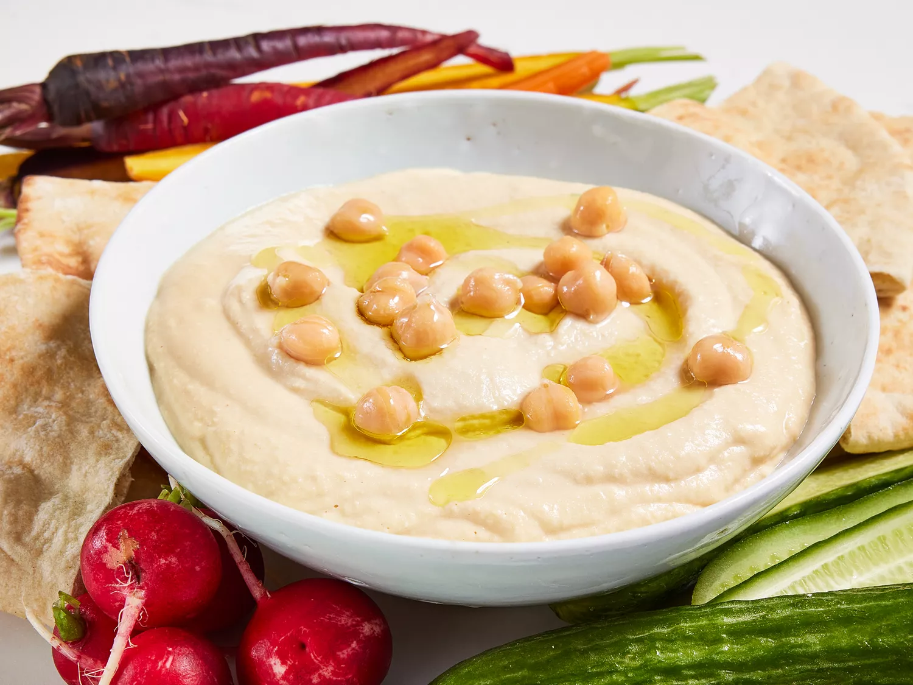

Hummus

Description
Hummus is a creamy and nutritious Middle Eastern dip made from blended chickpeas, tahini (sesame seed paste), lemon juice, garlic, and olive oil.
This versatile spread is rich in protein and fiber, and is often enjoyed with pita bread, fresh vegetables, or used as a flavorful addition to sandwiches and wraps. Its smooth texture and savory taste make it a popular choice for appetizers and snacks.
Ingredients
- 2 cloves garlic
- 1 (19 ounce) can garbanzo beans, half the liquid reserved
- 4 tablespoons lemon juice
- 2 tablespoons tahini
- 1 teaspoon salt
- 2 tablespoons olive oil
- black pepper to taste
Steps
- Chop garlic in a blender.
- Pour garbanzo beans into the blender, reserving about 1 tablespoon for garnish.
- Add reserved liquid, lemon juice, tahini, and salt to the blender. Blend until creamy and well mixed.
- Transfer mixture to a medium serving bowl. Drizzle olive oil and sprinkle pepper over the top.
- Garnish with reserved garbanzo beans.
Reference